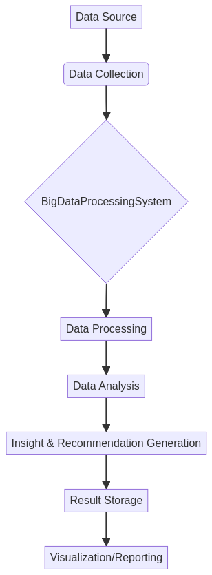

This project, Big-Data-Processing-Engine, developed by Gabriel Demetrios Lafis, is an enterprise-grade system designed for efficient processing and analysis of large datasets. It leverages modern Java features and concurrent programming to handle data records, generate insightful summaries, and provide actionable recommendations.
ExecutorService for parallel data processing, ensuring high throughput.The system follows a modular architecture, as illustrated below:
git clone https://github.com/GabrielDemetriosLafis/Big-Data-Processing-Engine.git
cd Big-Data-Processing-Enginemvn clean installjava -jar target/big-data-processing-engine-1.0.0.jarThis will initialize the system with sample data, process it, and print the analysis results to the console.